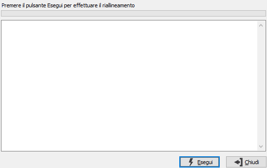

Riallineamento Web B2C
La procedura consente di inviare al database relativo ai dati dell'eCommerce B2C i dati aggiornati di OS1 (articoli, tabelle, documenti ecc.) e ricevere contemporaneamente i dati provenienti dal web che poi saranno trattati dalle procedure di OS1 e del modulo eCommerce (ordini, statistiche di accesso, operatori, ecc.).
La procedura è fondamentale, sia per tenere aggiornata l'area eCommerce B2C del web, sia per avere disponibili eventuali nuove informazioni inserite dagli utenti che si sono connessi al web.
La pressione del pulsante Esegui avvia la procedura di riallineamento ed eventuali segnalazioni di errore o di operazione effettuata vengono visualizzati nel riquadro di testo.
